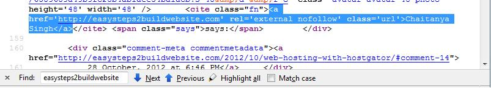

Whenever a new blogger setup its own blog, the first thing which comes into his mind is, how will my webpage hit first page on Google search results? If you are a newbie and searching the answer of it then a one liner answer would be Improve On page & Off Page SEO where SEO stands for search engine optimization. Building backlinks is Off page search engine optimization. In this article, I will explain to you what are dofollow and nofollow links? We will also discuss how it affects website’s page rank.
Note: Page rank seems irrelevant now because it has not been updated since December 2013. Also, Google’s John Mueller said that: We will probably not going to be updating Page rank going forward, at least in the Toolbar PageRank.
For those who are wondering what is page rank, it is a quality metric invented by Google. It measures a page’s value on a scale of 0 to 10, The values 0 to 10 determine a page’s importance, reliability and authority on the web according to Google.
Lets talk about nofollow and nofollow links: Technically Nofollow links stop the link juice(its quality and value) from spreading to other pages. On the other side dofollow link tells Google bots(sometimes referred as spiders) to follow the link and index the page, thereby giving the linked page value.
What is Nofollow link?
If a link is set to nofollow, it means Google bot won’t crawl the link and won’t pass any link juice. This is how nofollow links look:
<a href= http://www.example1.com rel="nofollow">Example1</a>
<a href= http://www.example2.com rel="external nofollow">Example2</a>
rel HTML tag: Did you notice rel html tag in the links above? Both the links having nofollow keyword in their real tag, which means they are nofollow links. Even though nofollow link doesn’t pass any link juice, it helps you to bring traffic towards your website, so if you are making No follow links then there is no harm. Google doesn’t follow these links, however other search engines respect them, I have explained it in detail at the end of the post.
You can also make an entire post nofollow with the help of robots meta tag for that you can just add the following statement to the header section of a page/post.
<meta name="robots" content="nofollow" />
By adding the statement above, you can make a whole post/page nofollow, All the links present on the page will be treated as nofollow even though they don’t have Nofollow rel tag.
Read more about meta robots tag here »
Free WordPress plugin to setup robots meta tag.
No Index No follow Noarchive Noodp & Noydir tags in detail.
What is Dofollow link?
Dofollow link passes link juice and they definitely help you much, in order to achieve good page rank. As it instructs search engine spiders to follow this link.
<a href = http://www.example3.org rel="external">Example3</a>
This link is dofollow, generally when you left comment on other site, you will see links with rel external attribute, rel=”external” is just to represent that the link is external, it has nothing to do with backlink type. If you find no rel attribute in link then also its being treated as a dofollow link.
Recommended readings » Build High PR Dofollow Links & Build quality backlinks.
How to check whether links is dofollow or nofollow?
There are many ways to check dofollow and nofollow links, however I prefer the method 2 to identify the type of link.
Method1:
Let me explain this with an example. Suppose you commented on a blog and you want to check whether the link is nofollow or nofollow. You can follow the steps below to find out:
Step1: Right click on the webpage and click on ‘view page source’ as shown in the below screenshot.
Step2: Search for the link you left in source code, press Ctrl+F and search for your website name or your comment as shown in the screenshot below. You will find out the source code of the backlink you made, thats it now you can see whether the comment you dropped has dofollow link or nofollow link,similarly you can also prepare the list of the blogs which awards you with nofollow link when you comment.

Did you noticed that the comment I left on my own blog is nofollow :D?
Note: When this post has been published first, the blog name was different, it has been changed to beginnersbook.com couple of years back.
Method2: Right click on the link and click on ‘inspect element’ and it will show you the html code for your backlink. You can easily check rel attribute and determine the link type.
Few useful WordPress plugin
» Dofollow – This plugin will help you to remove nofollow from the comments.
» Nofollow case by case
Useful Mozilla Addon to make your task easy
Commenting on other blogs is probably is the easiest and quickest way to build quality backlinks, however do you feel cheated when the link you left in comment is nofollow? I don’t rather I prefer to comment on blog that rewards dofollow link to their commenters.
Do you need something which can tell you that the comment links are nofollow or dofollow as soon as you open the website on browser? There is a mozilla Addon which highlights the nofollow & dofollow links as and when you open anything on Mozilla. Find the add-on and read more here.
How search engines interpret dofollow and nofollow links?
While all engines that use the nofollow value exclude links that use it from their ranking calculation, the details about the exact interpretation of it vary from search engine to search engine.
- Google states that their engine takes ‘nofollow’ literally and does not follow the link at all. However, experiments conducted by SEOs show conflicting results. These studies reveal that Google does follow the link, but it does not index the linked-to page, unless it was in Google’s index already for other reasons (such as other, non-nofollow links that point to the page).
- Yahoo! follows it, however excludes it from their ranking calculation.
- Bing respects ‘nofollow’ as regards not counting the link in their ranking, however it is not proven whether or not Bing follows the link.
- Ask.com also respects the rel attribute.
If you have any questions regarding this, please feel free to ask me, either through comment or contact-us form. I would love to answer those.I wanted to discuss some other related topics such as traffic tricks, Keywords role in SERP, dofollow backlinks etc. But I think I should write another post for these topics.
If you like the post and wants to stay in touch then Circle us on Google plus and share this article among your friends and fellow bloggers.
Hi Chaitanya
Thanks for the sharing the detail topic.I appreciate your points.Always Do follow backlinks achieve great success for all.
Hi Shan, Thank you for the comment and I am glad you liked it :D
this is great thank you for sharing seo knowledge i like and i share
Hi,
Thanks for sharing!
Good to know that link juice is still passed by no-follow blogs.
I think many people automatically dismiss these links as useless; however, if I remember rightly Google likes blogs to have a healthy mix of do and no follow?
Thanks again,
Glenn
Glenn, Thanks for the comment, Nofollow link doesn’t pass any link juice, however it is good to have a good mix of dofollow and nofollow backlinks.
Hi i want to ask you something about the nofollow attribute.
What if i set comments and backlinks to be DOFOLLOW but i have cloaked links in all posts that have NOFOLLOW attribute?
Does it affect my page rank or should i put DOFOLLOW in all my cloaked links?
Will google block my site for having too many affiliate links ?
Thank you for responding since this is quite important for my site.
Hey Robin, Thanks for stopping by.
I would suggest, set all your affiliate links to nofollow to be on the safer side as Google may consider them as paid link and if you make them dofollow then there is chance that Google may penalize you site.
However for comment links, it is up to you whether you make them dofollow or nofollow.
Hope I made it clear :D
Hi Chaitanya,
Thank you for your answer. It’s now clear that they (cloaked links) are ok to be NOFOLLOWed.
Happy new year in advance !
Thanks Robin and same to you :)
Thanks chaitanya to posting nice article .Such a great help.
Is really search engine doesn’t give any importance to the nofollow links? I read on the internet and few blogs that there are small percentage of link juice passing takes place through the nofollow links too . What you think?
Hi Tushar, It depends, if you talk about Google then they completely ignore nofollow links from their page rank calculation. Nofollow links doesn’t pass any link juice.
But it doesn’t mean that you need to completely concentrate on dofollow links as it would look unnatural. Better to have a healthy mix of dofollow and nofollow.
Let me know if you still have any question. Thanks for stopping by!
Hey Chaitanya,
great post.
here i want to share one thing with all to check out that comment is dofollow or nofollow.
there is very simple trick to do so.
go to google. and write nodofollow add onn.
install it. it will not take more than 1 minute.restart your mozila browser.
then go to any page and right click on it. the links catch purple colour are DOFOLLOW and red one are NOFOLLOW.
simple.
enjoy.
Thanks Nelson!! This tip would be useful for identifying dofollow and nofollow links..
Thank you for the post. My page has hundreds of nofollows yet a handful of dofollows. Your article has shed more light on the subject. I’ve been wanting to confirm the import of both on a site before today. Your page came in at the right time.
Thanks! That definitely helps me understand do follow and no follow links better, i’m still a beginner!
i have been searching the differences between nofollow and dofollow and how to make backlinks with any of one ….thanks for sharing,,
Al little add on (searchstatus) installation in firefox can ease the process of indicating dofollow and nofollow links. It will highlight the nofollow links in a webpage. :)
Thanks for this post. That helps me understand difference between follow and no follow links
Hey I have read everything above but wanna ask one thing, how much should be the ratio of our backlinks for any site?? I mean ratio between do-follow and no-follow?
Well Chaitanya congrats for your new first time reader :) Thanks for writing a nice article but what i think is sometimes google passes the juice to the content linked, even though the backlinks are nofollow. I have read somewhere i think thats on problogger. If you only make dofollow backlinks then it will be an indication to google about the wrong link building practices, so yes google also uses nofollow links to decide the ranking in their search engine system ;)
thanks for sharing dofolow vs no follow backlinks !
Thanks for the useful information! Clearly written and explained the difference between a nofollow and dofollow link.
Hey Chaitanya,
I was searching for SEO tactics and i found your blog while searching for the term dofollow backlinks. Thanks for sharing the difference. It seems you’ve availed too much dofollow backlinks that’s why your rank for the term dofollow backlinks is at top on Google, keep sharing articles like this.
-Siraj Wahid
Great article on DoFollow and NoNollow backlinks. The language used is simple to understand, even for a novice reader. Thanks!
Thank you so much for all the advice and all this information beceaus it makes a good temp I was up the search for dofollow blogs and it was very dificult for me to make the diference between dofollow and nofollow
Thanks for sharing this news with us !
I’m glad I came across this article. For a while now I’ve been working on my backlinks, when to use dofollow and nofollow. Your article has given me much insight.
Thanks Chaitanya..
For this nice informative and simply written article !
I got to learn the difference btwn these two !
And i would like to add….try and give dofollow links to high authority sites in your niche and dofollow links that would just be a mere refference.
It will help maintain your page value and make sure the link juice dosen’t pass to other sites.
Thank You :)
Well, according to my experiments, which i did in last few months, Nofollow Links does pass any link juice directly, but if those Nofollows are from authority sites and are from the body of the post, then it can help in ranking. But still, haven’t able to find the perfect conclusion. So, I think, we should not built nofollow links intentionally, as it cannot help directly to ranking.
I may be wrong. What you think about this?
Hi Chaitanya,
Amazing post indeed,how nicely you have shared with us a detailed guide regarding Dofollow Vs Nofollow Backlinks. As we all know that in search engine Optimization link building plays an imperative role, without knowing the actual anatomy and difference between both sort of links one cannot get satisfactory results.
Thanks for sharing such a fantastic post, Hope it help out bloggers to know more about in detail :)
Keep sharing.
Regards
Mariaj